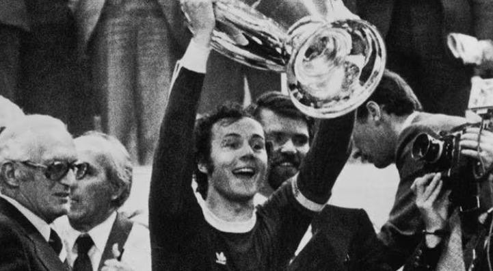
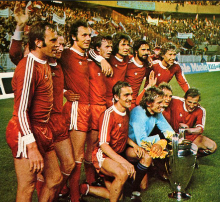
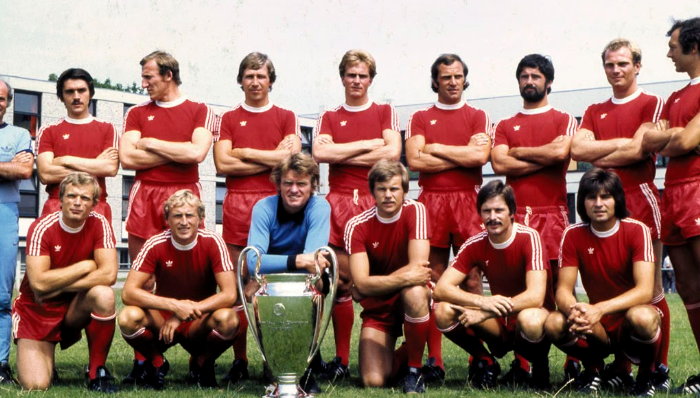
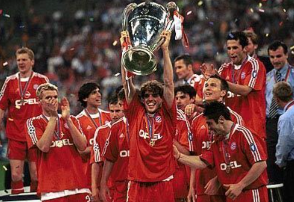
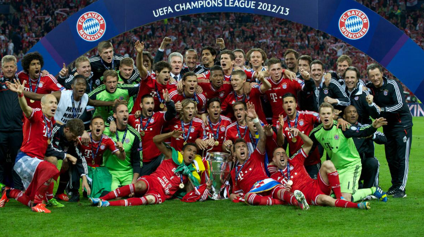
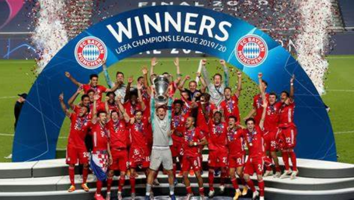
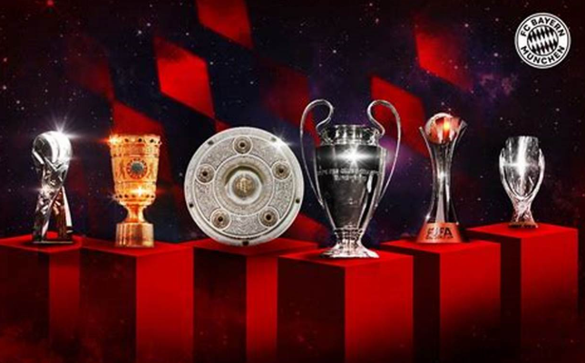

SEJARAH KEMENANGAN 6X FC BAYEN MUNCHEN DI UEFA CHAMPIONS LEAGUAGE
🏆 1. Musim 1973–74
Final: Bayern München 4–0 Atlético Madrid (setelah replay, karena laga pertama 1–1)
Tempat: Heysel Stadium, Brussels
Fakta unik: Final pertama yang diulang dalam sejarah kompetisi, karena hasil imbang di laga pertama.

🏆 2. Musim 1974–75
Final: Bayern München 2–0 Leeds United
Tempat: Parc des Princes, Paris
Pencetak gol: Franz Roth, Gerd Müller
Fakta unik: Leeds sempat mencetak gol lebih dulu tapi dianulir secara kontroversial.

🏆 3. Musim 1975–76
Final: Bayern München 1–0 Saint-Étienne
Tempat: Hampden Park, Glasgow
Pencetak gol: Franz Roth
Fakta unik: Bayern menjadi tim ketiga yang menang tiga kali berturut-turut setelah Real Madrid dan Ajax.

LEBIH LENGKAP
BAYERN MUNCHEN MENGALAMI HATTRICK DI UEFA CHAMPIONS LEAGUAGE SETELAH AJAX
MUSIM 1973-1974-1975
🏆 4. Musim 2000-01
Final: Bayern München 1–1 Valencia (Bayern menang adu penalti 5–4)
Tempat: San Siro, Milan
Pencetak gol: Stefan Effenberg (penalti)
Fakta unik: Final ini memiliki 3 penalti dalam waktu normal + adu penalti.

🏆 5. Musim 2012–13
Final: Bayern München 2–1 Borussia Dortmund
Tempat: Wembley Stadium, London
Pencetak gol: Mario Mandžukić, Arjen Robben
Fakta unik: All-German final pertama dalam sejarah Champions League.

🏆 6. Musim 2019–20
Final: Bayern München (1)–(0) Paris Saint-Germain
Tempat: Estádio da Luz, Lisbon
Pencetak gol: Kingsley Coman
Fakta unik: Bayern menjuarai turnamen dengan rekor sempurna: menang di semua pertandingan (11 laga).

BAYERN MUNCHEN MENGALAMI SIXTUPLE
MUSIM 2020
